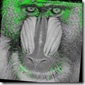

Introduction
“In computer vision and image processing the concept of feature detection refers to methods that aim at computing abstractions of image information and making local decisions at every image point whether there is an image feature of a given type at that point or not. The resulting features will be subsets of the image domain, often in the form of isolated points, continuous curves or connected regions.”
Wikipedia
Update: Here is Updated Post with added new detectors (ORB and SIFT).
Overview
OpenCV is free open-source library intended for use in image processing, computer vision and machine learning areas. It have a huge amount of different algorithms, but in this topic i will compare their existing feature detectors. At this moment OpenCV has stable 2.2 version and following types of descriptors: Fast, GoodFeaturesToTrack, Mser, Star, Sift, Surf. And few Adapters over detectors: GridAdapted, PyramidAdapted, DynamicAdapted. In this article noticed above detectors will be compared by speed, quality and repeatability in different lighting and scale.
Test images


All images are 512x512 size. Processing was done on grayscale images.
Criteria
Speed – the most important criteria for real-time image processing. To achieve smooth real time processing your code must process single frame in less than 30 milliseconds! It’s quite enough for four cores of Core i7 processor, but imagine your code will be running on mobile device, which have ten times lower computation power. We will test how fast our detectors are on the laptop CPU and on the mobile processor.
Test case: Detect feature points on the given image and measure spent time.
Quality – detected features usually used in further tracking or matching (for SLAM, panorama stitching, object detection, etc..). So “feature consumer” expects that detected features are good enough for it. Detectors will be tested for Optical Flow KLT tracking and two-frames matching using SIFT and SURF descriptors. For tracking test I will apply some affine transformation for original image and detected on the previous step keypoints. With transformed image and transformed keypoints we can estimate quality of tracking.
Here is screenshots demonstrating transformed images and tracks of the features.



**Lighting and scale invariant – **feature detectors are expected to detect the same features either on large or small images of one object. That’s true also for lighting – slight brightness and contrast fluctuations shouldn’t affect on the feature detector significantly. Almost all modern cameras have automatic gain control which automatically adjust exposure trying to avoid over- or underexposed areas in image. Robust detection is critical for further processing.
Here is explanation screenshot:


As you can see, the second picture for each pair are slightly brighter. This test simulates automatic camera gain option for many modern web-cams.
Estimation marks
Speed per frame – absolute total time in milliseconds spent to the feature detection of the single frame.
Speed per keypoint – detection time for single keypoint. Evaluated as total time divided to number of detected keypoints. Helps us to estimate how cheap the detection actually is.
Percent of tracked features – percent of successfully tracked features from original to transformed image. In ideal situation, value of this mark should be near 100%.
Average tracking error – this is the average distance between position of tracked feature and their calculated position on transformed frame. This mark indicates accuracy of the feature detection. Large values indicates large number of false positive tracking or “drift” of feature point among frames.
Features count deviation – difference between number of keypoints on reference frame and number of detected keypoints on transformed frame divided by number of keypoints on reference frame. Helps estimate how slight exposure changes affects feature detection.
Average detection error – average distance between nearest keypoints on original and transformed frame.
Testing hardware configuration
We will test all set of feature detectors on two configurations – laptop and mobile on the same data sets to compare performance and ensure that detection results are identical for both platforms.
MacBook Pro iPhone 3GS
CPU Model Core 2 Duo T7400 ARM Cortex A8
CPU Clock 2160 MHz 600 MHz
CPU Cores number 2 1
Results
We start our analysis from number of detected feature points. And on the chart below we see that FAST detector finds thousands of keypoints, while other detectors finds only hundreds. Unlike the other detectors, keypoints detected by FAST can contain too many “noise” features – which are not appropriate for further tracking.
Speed of feature detection will be examined using two criteria’s – by total amount of time spent for the detection of keypoint on the whole frame and a time per single keypoint which is simply total time divided by number of detected keypoints. As expected, FAST detector provides best detection time per feature.

Finally the last performance tests – how fast are feature detectors on mobile devices? Here is four charts (for four different images) that will answer this question:


As we can see from charts above - on the mobile platform all feature detectors works ~3-5 times slower than on desktop. So without optimization for architecture of concrete processor real-time performance can’t be achieved (see conclusion).
Now to quality estimation. Following chart demonstrates average tracking error (in pixels) between reference frame and slightly transformed. Pyramid KLT tracker was used (cvCalcOpticalFlowPyrLK). STAR (Also known as CenSurE) detector found keypoints that were tracked best than other detectors.

Chart below gives us information about how many of features were tracked successfully. All detectors provide very good feature points, except for MSER detectors, which score is less that other’s detectors for all test images.

A last chart shows how feature detectors co-variant with brightness changes. STAR and MSER detectors are very sensible to brightness variation, while the other detectors are not.

Conclusion
The choice of the feature detector very much depends on a problem. For example, if you doing monocular SLAM, FAST detector is weapon of choice, because it’s fast and detects a lot of features. For image stitching, pattern recognition and other feature-descriptor related tasks, scale- and rotation-invariant detectors are preferable.
For desktop applications almost all feature detectors guarantee real-time (25 fps+) performance. But for mobile device the fastest detector (FAST) works only with ~10fps. Why such huge difference? First of all, laptop CPU is much more powerful. But also, cache size and processor architecture does matter. OpenCV supports SSE/SSE2/SSE3 intrinsic instructions which can deal 10x speedup because of instruction vectorization. Unfortunately, OpenCV supports intrinsic instructions only for x86 architecture. There are ARM NEON SIMD engine, and theoretically with their help we can significantly improve performance of feature detection on mobile platforms. But this require a lot of experience and low-level knowledge of CPU architecture. I will reveal benefits of the NEON intrinsic in my further posts.
This article highlights only few performance and quality aspects of the feature detection problem. I highly recommend you to read the article “Local Invariant Feature Detectors: A Survey” the get much more knowledge of how different feature detectors work.